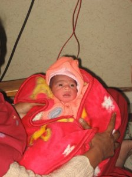

यह शीर्षक कहीं पढ़ा- पढ़ा सा लगता है ना!
आज से दो साल पहले जिन मित्रों ने चिट्ठा लिखना शुरु कर दिया था वे सब अपने दिमाग पर जोर देंगे तो याद आ जायेगा कि ये शब्द कहां पढ़े थे।
नहीं याद आया ना! चलिये मैं ही बता देता हूं यह पोस्ट हम सबकी प्रिय निधि श्रीवास्तव ने लिखी थी। एक जमाने की मशहूर चिट्ठाकारा और मेरी बहन निधि श्रीवास्तव पहले खूब लिखती थी और क्या खूब लिखती थी!
फिर अचानक अमितजी की तबियत खराब हो गई और निधि अपने घर- परिवार की देखभाल में व्यस्त हो गई सो चिट्ठा लिखना छूट सा गया; हां बीच बीच में एकाद पोस्ट से अपनी स्थिती से अवगत कराती रही।
निधि ने अपनी इस पोस्ट में ये पंक्तियाँ लिखी थी –
इस बीच अपने चिटठे पर की गयी टिप्पणियों को देखने की भी फुर्सत नहीं मिली । हम अपने नये खिलौने के साथ इतना व्यस्त थे कि आभास ही नही हुआ कब तीन दिन ग़ुज़र गये। इससे पहले कि अटकलों का दौर शुरू हो, हम ही बताये देते हैं कि खबर क्या है ।
उस समय तो पाठकों ने इन लाईनों और शीर्षक को पढ़ कर पता नहीं क्या क्या अटकलें लगाई थी,  पर इस बार यह अटकल नहीं है, यानि निधि और अमितजी के यहां 7 जनवरी 2009 को पुत्ररत्न का जन्म हुआ है।
पर इस बार यह अटकल नहीं है, यानि निधि और अमितजी के यहां 7 जनवरी 2009 को पुत्ररत्न का जन्म हुआ है।


कबीर श्रीवास्तव
शिशु का नाम पहले “कबीर” रखा जाना था बाद में शायद “अद्यन्त’ निश्चय हुआ। फिलहाल नामकरण हुआ नहीं है सो हम कबीर ही मान लेते हैं।
हिन्दी चिट्ठाजगत तथा मेरी ओर से से निधि-अमित जी को यह शुभ समाचार सुनाने के लिये ढ़ेरों बधाईयाँ एवं कबीर को स्नेह-आशीर्वाद।
पहले इस पोस्ट को अक्षरग्राम पर लिखी थी पर किसी कारणवश दो दिन से अक्षरग्राम खुल नहीं रही सो इसे यहां पोस्ट की है।
और हाँ बहुत जल्दी एक और शुभ समाचार सुनने के लिये तैयार रहिये…. ना, ना! अभी नहीं बतायेंगे कि वो कौन सुनाने वाला है।
९